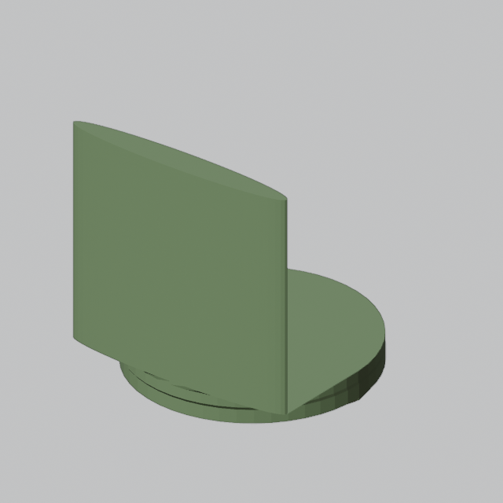
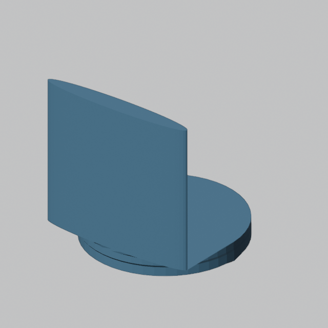

A. Keep the editable multipart output

11 indexed parts. Duplicate/coincident surfaces and contacts remain explicit assembly evidence. Independent part editing is preserved.
The original artist sources and saved candidate remain intact. These are diagnostic views of the existing geometry under the same camera.

11 indexed parts. Duplicate/coincident surfaces and contacts remain explicit assembly evidence. Independent part editing is preserved.

Exact Boolean preview: 2 indexed components. Boundary checks pass, but this is not a qualified single solid. Maximum bounds change: 2.64×10⁻⁸ metres. Editing the artist sources requires recompiling the evaluated copy.
Neither representation is applied to the original artifact. Containment/semantic intent for the two remaining components is unestablished. This comparison measures representation, not chair reconstruction quality.